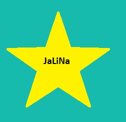
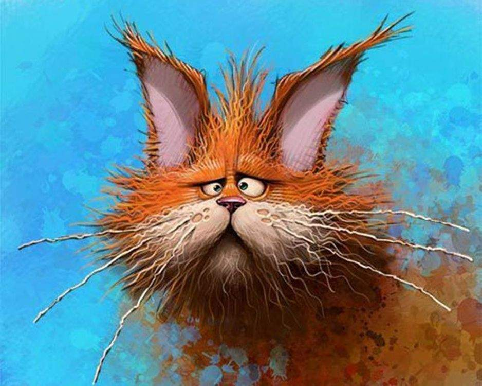
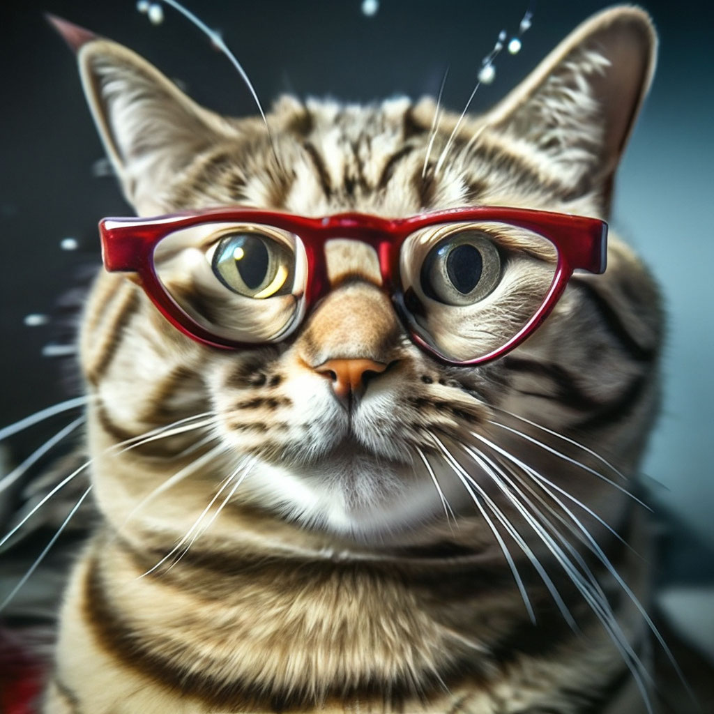
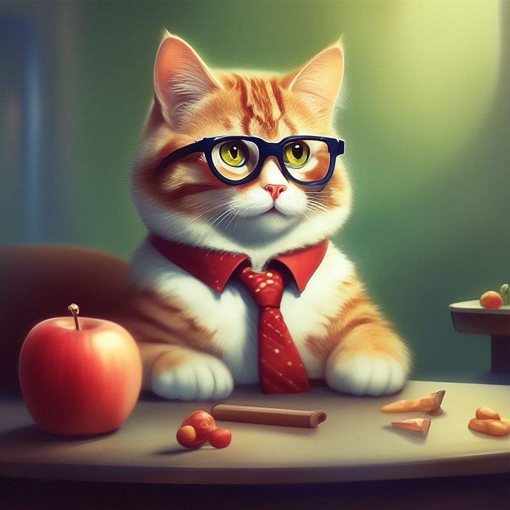

Тренування з HTML

Денисова Галина
Особисті дані
- Рік народження: Нещодавно)
- Стать: жіноча
- Місто: Зміїв
-
Адреса: А не скажу)
Освіта
- Зміївська ЗОШ №2
- ХНПУ ім. Г.С.Сковороди
Захоплення та робота
Захоплення : відпочивати після роботи))))
Робота: Працюю на найкращій роботі
Трохи фото




Трохи Аудіо
Трохи відео